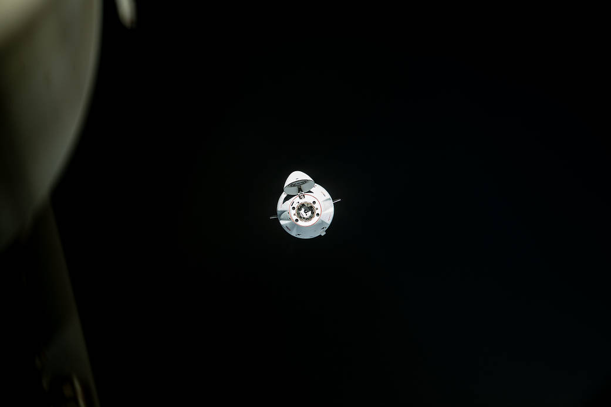

Veicoli
Falcon 1
Il piccolo lanciatore con cui SpaceX imparò a raggiungere l’orbita: due stadi, due motori diversi e cinque tentativi fra il 2006 e il 2009.
StoricoApri la scheda →Consultare, confrontare, approfondire
Dal motore alla missione, dalla capsula alla rete. Trentadue schede per capire che cosa fa ogni elemento, come funziona e che cosa deve ancora dimostrare.
Edizione 10 ottobre 2026 · Fotografia di sfondo: Steve Jurvetson, IFT-5, CC BY 2.0.
Le schede raccolgono le caratteristiche e le distinzioni essenziali; i libri seguono lo sviluppo dei programmi. I collegamenti permettono di passare dall’uno all’altro senza perdere il contesto.
32 schede disponibili
Nessuna scheda corrisponde ai filtri. Prova un altro termine o azzera la ricerca.
Veicoli
Il piccolo lanciatore con cui SpaceX imparò a raggiungere l’orbita: due stadi, due motori diversi e cinque tentativi fra il 2006 e il 2009.
StoricoApri la scheda →
Veicoli
Il lanciatore che combina servizio orbitale e riuso del primo stadio. La configurazione Block 5 ha consolidato una storia fatta di versioni e prove successive.
OperativoApri la scheda →
Veicoli
Tre core e un secondo stadio per missioni pesanti o ad alta energia. I booster laterali e il core centrale affrontano condizioni di recupero diverse.
OperativoApri la scheda →Motori
La famiglia di motori a ossigeno liquido e kerosene dei Falcon. La versione atmosferica e quella per il vuoto condividono principi, ma hanno ugelli e impieghi differenti.
OperativoApri la scheda →Motori
Il motore del secondo stadio Falcon 1. La sua alimentazione a pressione mostra una soluzione più semplice delle turbopompe, con compromessi propri.
StoricoApri la scheda →
Veicoli
La capsula cargo che aprì il servizio SpaceX verso la ISS e riportò esperimenti sulla Terra. Alla stazione arrivava tramite cattura robotica e berthing.
StoricoApri la scheda →
Veicoli
La capsula abitabile che collega Falcon 9, equipaggio e missione orbitale. Il ritorno e la sicurezza richiedono sistemi e prove propri, oltre al lanciatore.
OperativoApri la scheda →
Veicoli
La versione cargo della seconda generazione Dragon: attracco autonomo, carichi pressurizzati ed esterni, ritorno degli esperimenti sulla Terra.
OperativoApri la scheda →Motori
I piccoli propulsori che permettono a Dragon di orientarsi e manovrare. Il loro compito è diverso dalla fuga rapida affidata ai SuperDraco.
OperativoApri la scheda →
Motori
La propulsione di fuga integrata in Crew Dragon. Otto motori devono allontanare rapidamente la capsula da una situazione pericolosa durante il lancio.
OperativoApri la scheda →
Veicoli
Il booster di Starship: sostiene la prima parte dell’ascesa, si separa dalla nave e tenta il ritorno. La cattura alla torre è una funzione dell’intero sistema.
SperimentaleApri la scheda →
Veicoli
Il secondo stadio e veicolo orbitale di Starship. Carico, rientro e varianti lunari o cisterna impongono compiti differenti alla stessa famiglia.
SperimentaleApri la scheda →
Motori
Il motore a metano del sistema Starship. La combustione stadiata a flusso completo modifica il percorso dei propellenti e rende molto impegnativa l’integrazione.
In sviluppoApri la scheda →Sistemi
Il sistema che permette alla nave di affrontare il rientro atmosferico. Materiali, giunti, orientamento e manovre contano insieme alle singole piastrelle.
In sviluppoApri la scheda →
Sistemi
La separazione nella quale la nave accende i motori prima che il booster abbia concluso completamente la propria spinta. L’interfaccia deve gestire getti e carichi.
SperimentaleApri la scheda →
Sistemi
Il passaggio che rende possibili molte missioni Starship oltre l’orbita bassa. Non è soltanto attraccare due veicoli: occorre gestire liquidi criogenici e riserve.
In sviluppoApri la scheda →
Programmi
La variante lunare scelta dalla NASA per il programma Human Landing System. Il suo percorso di qualifica è distinto da quello della nave che rientra sulla Terra.
In sviluppoApri la scheda →
Reti
Una rete che cambia hardware mentre continua a funzionare. V0.9, V1, V1.5, V2 Mini e V3 descrivono passaggi differenti dalle autorizzazioni Gen2.
OperativoApri la scheda →
Reti
Il percorso ottico fra satelliti permette di instradare traffico sopra oceani e regioni lontane dalle stazioni terrestri. La latenza dipende anche dalla gestione della rete.
OperativoApri la scheda →
Reti
L’antenna dell’utente è parte del sistema: visibilità del cielo, energia e installazione incidono sul collegamento quanto i satelliti.
OperativoApri la scheda →Reti
Un collegamento mobile diretto fra satellite e telefono compatibile, costruito insieme agli operatori. Servizi, frequenze e disponibilità dipendono dal mercato.
OperativoApri la scheda →
Programmi
Il progetto SpaceX per il calcolo IA in orbita. Processori, energia, radiatori, rete e lancio formano un unico sistema da dimostrare.
In sviluppoApri la scheda →
Infrastrutture
Il polo texano in cui produzione, prove e lanci Starship si incontrano. Una mappa datata deve distinguere edifici industriali, aree di prova e rampe.
OperativoApri la scheda →
Infrastrutture
Il sistema di siti della Florida per Falcon 9, Falcon Heavy e Dragon. Kennedy Space Center e Cape Canaveral Space Force Station sono aree e amministrazioni differenti.
OperativoApri la scheda →
Infrastrutture
Il sito californiano che permette traiettorie utili per molte orbite polari ed eliosincrone. La geografia offre opportunità e impone vincoli.
OperativoApri la scheda →Infrastrutture
Il centro texano di prove dei motori SpaceX. Il collaudo a terra produce dati essenziali, ma deve essere collegato alla configurazione che volerà.
OperativoApri la scheda →Infrastrutture
Il polo californiano legato a progettazione e produzione della famiglia Falcon e Dragon. È un anello industriale distinto dalle rampe e dai siti di prova.
OperativoApri la scheda →Infrastrutture
Il polo dello stato di Washington legato allo sviluppo e alla produzione Starlink. Fabbrica, rete e cadenza dei lanci sono parti della stessa attività industriale.
OperativoApri la scheda →
Operazioni
Il percorso che porta il primo stadio dal volo a una nuova missione: rientro, atterraggio, trasporto, ispezioni e preparazione al rivolo.
OperativoApri la scheda →Operazioni
La cattura del booster e il ritorno della nave sono due problemi diversi. Il riuso completo richiede che entrambi tornino in condizioni adatte a una nuova missione.
SperimentaleApri la scheda →Reti
L’infrastruttura che collega la rete satellitare a quella terrestre. I laser estendono i percorsi disponibili, ma non eliminano la necessità di raggiungere una destinazione a terra.
OperativoApri la scheda →Programmi
Il progetto per portare una Dragon su Marte e raccogliere dati di discesa. Fu abbandonato prima di una missione: resta un passaggio nella storia delle scelte SpaceX.
AbbandonatoApri la scheda →La capacità massima di catalogo dipende da orbita, traiettoria, margini e recupero. Il confronto privilegia architettura e impiego; non mescola carichi dimostrati e obiettivi futuri in una classifica.
| Criterio | Falcon 9 | Falcon Heavy | Starship / Super Heavy |
|---|---|---|---|
| Architettura | Due stadi, un core | Tre core, secondo stadio comune alla famiglia Falcon | Due stadi, nave e booster dedicati |
| Propellenti | LOX / RP-1 | LOX / RP-1 | LOX / metano |
| Motori di riferimento | 9 Merlin + 1 MVac, Block 5 | 27 Merlin + 1 MVac | Raptor; configurazione dipendente dalla versione |
| Impiego | Satelliti, cargo e Crew Dragon | Carichi pesanti e missioni ad alta energia | Trasporto di grandi carichi; voli di sviluppo |
| Riuso dimostrato | Primi stadi rivolati; secondo stadio consumato | Booster laterali riutilizzati; strategia del centrale dipende dalla missione | Catture e rientri sperimentali; leggere separatamente recupero e rivolo |
| Vincolo del recupero | Propellente e traiettoria condizionano il carico | Centrale più sollecitato; possibile configurazione a perdere | Scudo, cattura, ispezioni e cadenza ancora da qualificare come sistema |
| Equipaggio | Crew Dragon è il veicolo abitabile | Nessun servizio umano qualificato | HLS è una variante e un programma di qualifica distinto |
| Come approfondire | Scheda Falcon 9 | Scheda Falcon Heavy | Scheda Ship |
Una configurazione del 2015, una prova del 2024 e un obiettivo industriale del 2026 non descrivono lo stesso stato del programma. Le schede specificano il riferimento e i limiti delle fonti. Leggi metodo, inventario e questioni aperte.